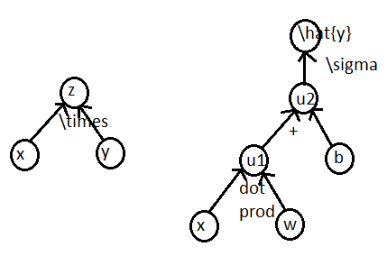

A function can be thought of as a computational graph. Nodes in the graphs represent variables, which can be scalars, vectors, matrices, tensors, etc. Edges in the graph are used to represent operations performed during the function's computation. Operations can have arbitrary numbers of inputs, but here is defined (without loss of generality) to only produce one output variable. No generality is lost as variables can be multi-entry vectors, matrices, tensors, etc. If there is an edge in the graph from node $i$ to node $j$, then a directed edge is drawn with source $i$ and target $j$. Each node that is not an input will be associated with an operation and incoming edges that compute the value of the node. Some examples of computational graphs can be seen below.
Uncited References: